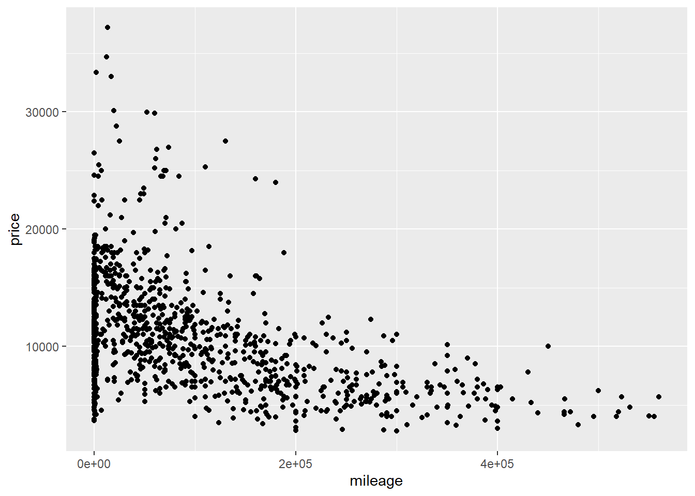
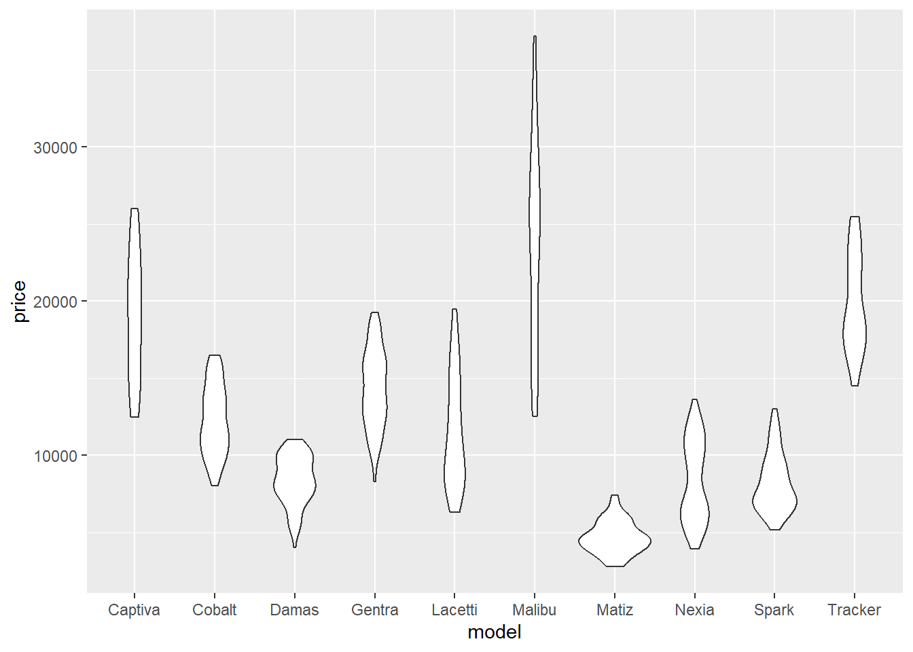
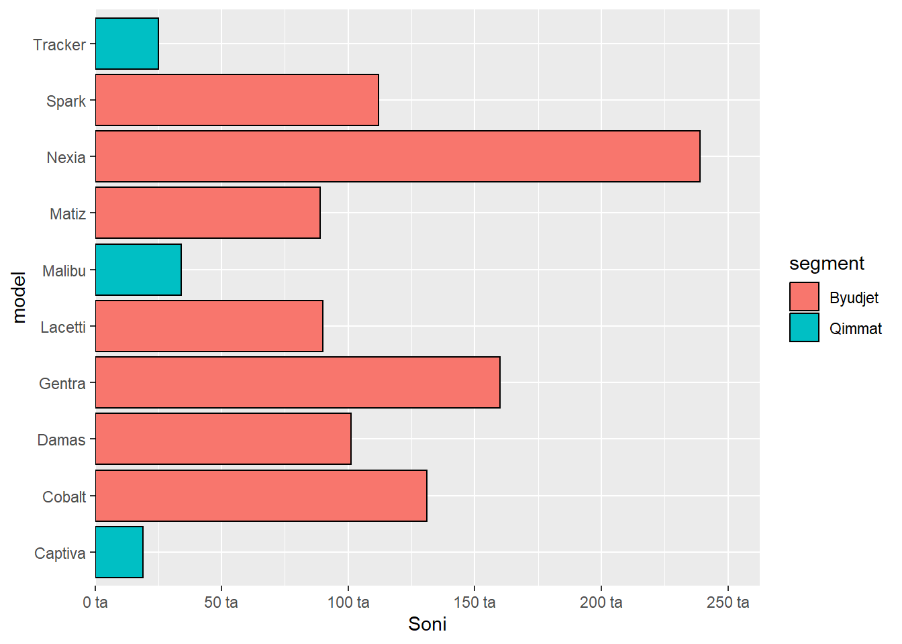
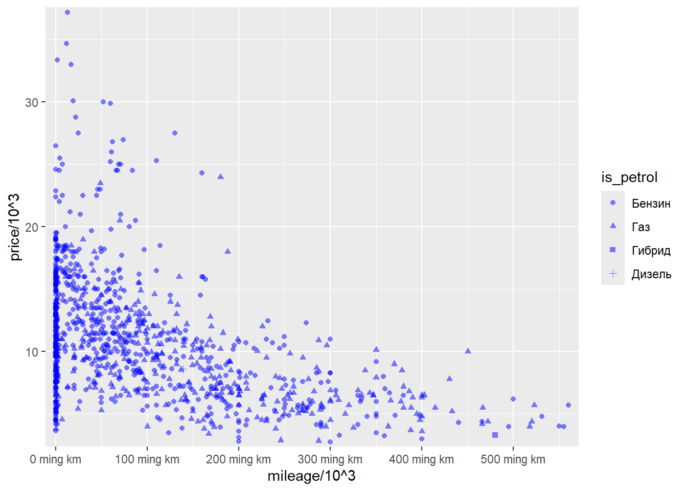
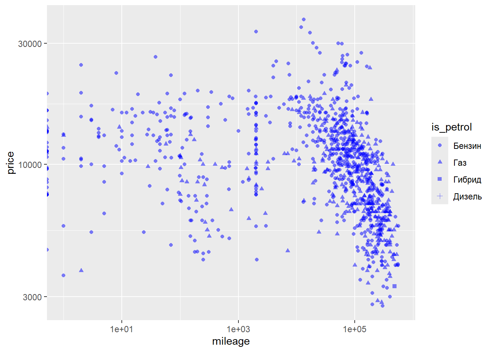
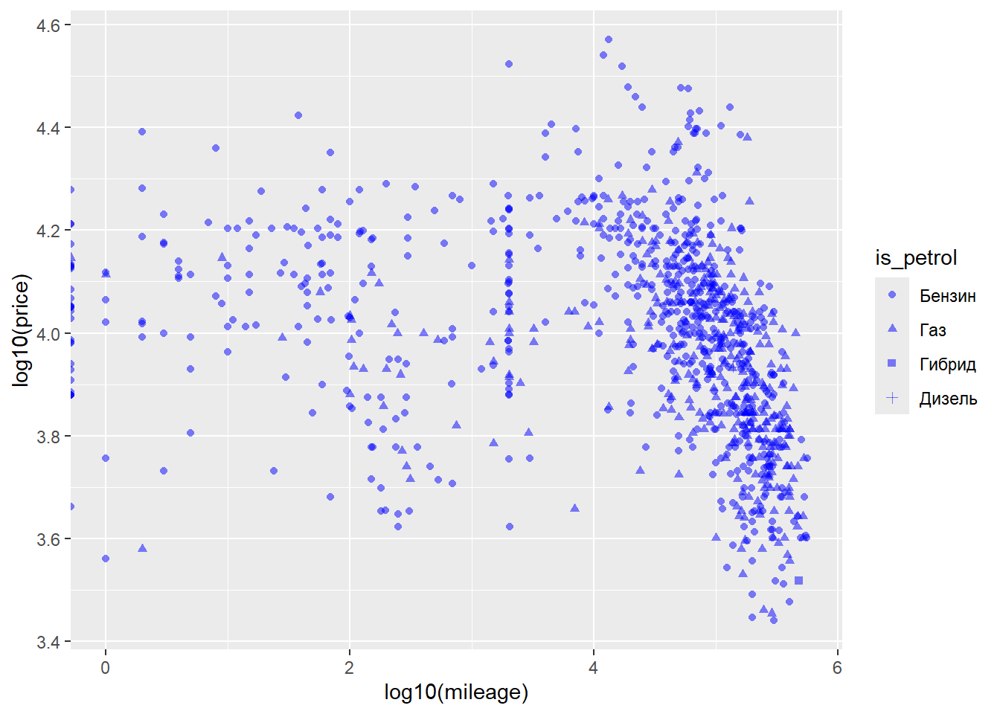
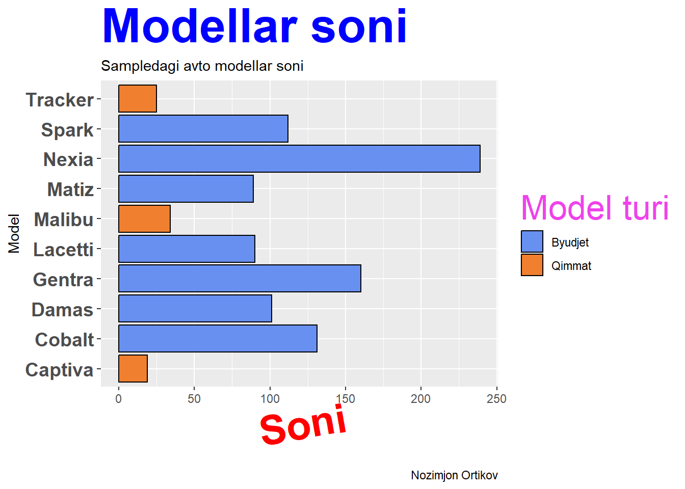
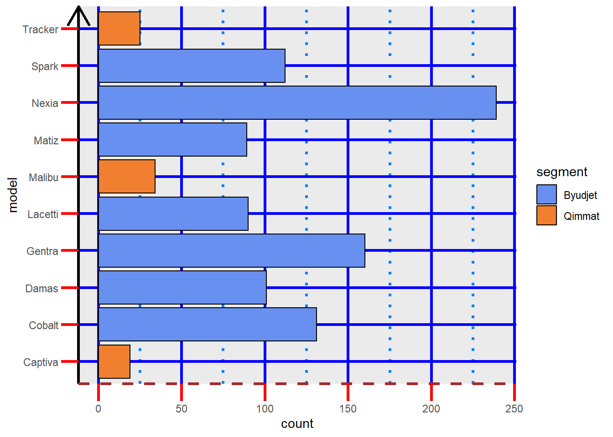
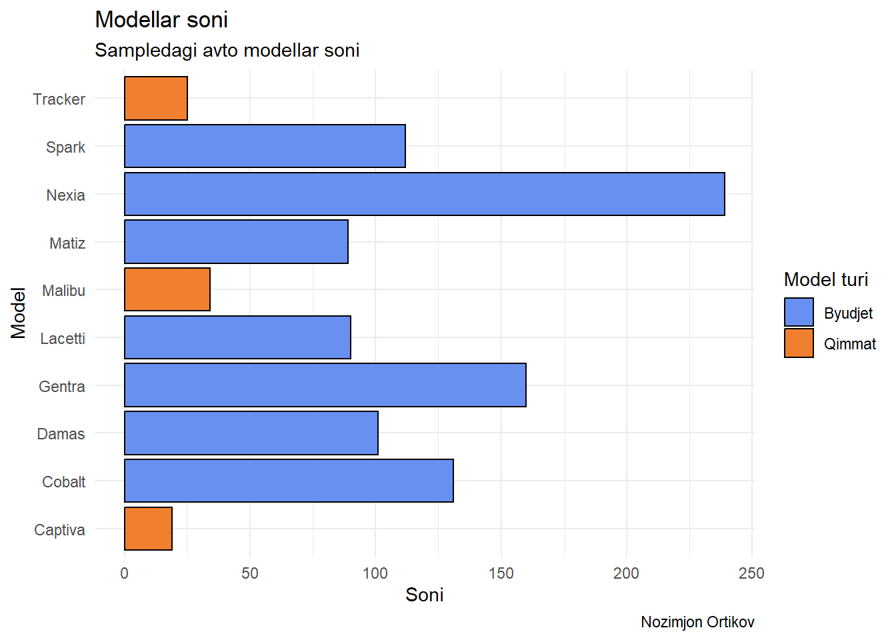
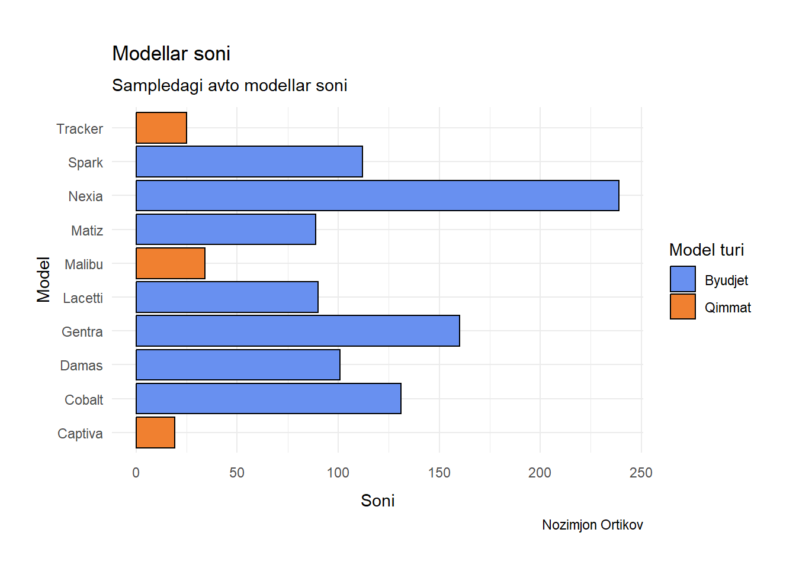

Kerakli library’larni chaqirib olamiz:
Data
Vizualizatsiya uchun avtomobil narxlari va unga tegishli boshqa ma’lumotlardan iborat quyidagi dataset’dan foydalanamiz. Dastlab datani import qilamiz:
chevrole_cars <- read_excel("chevrole_cars.xlsx") %>%
sample_n(1000)Endi ushbu dataset ma’lumotlarini inspeksiya qilamiz:
# datatable(
# chevrole_cars,
# filter = 'top')R base orqali vizualizatsiya
Hech qanday packagelarsiz R’ning ichki funksiyalari yordamida ham grafiklar yaratish mumkin. Masalan, scatter plot yarataylik:
plot(price~mileage, data=chevrole_cars)Yoki histogram:
hist(x=chevrole_cars$price)Muammo ushbu grafiklarga “ishlov” berishda boshlanadi.
hist(x=chevrole_cars$price,
breaks = 12,
col = "darkred",
main = "Avtomobil narxlari taqsimoti",
xlab = "Narxlar",
ylab = "soni")Bunday tartibda kod yozish chalkashtiradi va noqulay.
ggplot2 bilan murakkabroq grafiklar yaratish
Ushbu muammoning yechimi - {ggplot2} üì¶ package. Ushbu packageni yaratuvchisi Hadley Wickham hisoblanadi (Chief Scientist at RStudio/Posit) va {tidyverse} üì¶ tarkibi sifatida uning prinsiplariga amal qiladi. Bundan tashqari mazkur package chuqur vizualizatisya nazariyasiga asoslangan (Leland Uilkinsonning Grafika grammatikasi ).
ggplot2 elementlari
Ushbu packageni eng yaxshi tomoni u grafiklar grammatikasi (grammar of graphics) prinsiplaridan foydalangan holda grafiklar yaratadi.
ggplot2 “grafiklar grammatikasi”ning eng muhim prinsiplardan biri grafiklar pirog singari qatlam-qatlam qilib yaratiladi.
Bu mavhum tuyulishi tabiiy. Shuning uchun ggplot’ning har bir elementini ko’rib chiqamiz.
If we just run ggplot(), we’ll get a blank canvas.
ggplot()
Now we have to add our dataset and what our axes will be.
Whenever we are talking about a variable from our dataset, we have to put it inside the aes() argument, which stands for aesthetics.

In fact, as ggplot2 works in layers, we can use it as follows:
+ location
One common problem when creating ggplot2 graphics is to put the + in the wrong place: it has to come at the end of a line, not the start. In other words, make sure you haven’t accidentally written code like this:
# ggplot(data = chevrole_cars)
# +aes(x = mileage,
# y = price)As ggplot2 is part of the {tidyverse} üì¶, we can tell R in the imperative: ‚ÄúGet the dataset chevrole_cars and then create the ggplot‚Ķ‚Äù. The good thing about this approach is that, as ggplot already knows the dataset beforehand, it helps us select the variables (press tab before writing the variables).

Now we have our chart with the axes delimited, and we can add as many layers as we like. The principle of ggplot is similar to pipe, where the information is passed directly to the layer below, so we don’t need to add the data again.
No need to write explicitly write out data =, mapping =, x =, and y = each time in ggplot. ggplot code in the wild often omit these argument names. Yuqoridagi kodni qisqaroq formasi:
# chevrole_cars %>%
# ggplot(aes(mileage,
# price))Geometries
Geometries are functions that start with geom_*. There are lots of them and we can get a little help with ggplot2 cheatsheet. The geom determines how the data is shown
First, let’s create a scatterplot
chevrole_cars %>%
ggplot(aes(x = mileage,
y = price))+
geom_point()
To add another layer of geometry, just add another layer to this canvas. Let’s add a trend line with the geom_smooth() function.
chevrole_cars %>%
ggplot(aes(x = mileage,
y = price))+
geom_point()+
geom_smooth()We can add a linear trend line with the argument method = "lm"!
chevrole_cars %>%
ggplot(aes(x = mileage,
y = price))+
geom_point()+
geom_smooth(method = "lm")Here we can see how ggplot2 works like a painting. As geom_smooth() was called after geom_point(), it is plotted on top.
Let’s look at the same example but inverting these geometries.
chevrole_cars %>%
ggplot(aes(x = mileage,
y = price))+
geom_smooth(method = "lm")+
geom_point()Let’s make a boxplot/violinplot/dotplot (using the geom_boxplot geometry) of the type of cars by model
chevrole_cars %>%
ggplot(aes(x = model, y = price))+
geom_boxplot()chevrole_cars %>%
ggplot(aes(x = model, y = price))+
geom_violin()
chevrole_cars %>%
ggplot(aes(x = model, y = price))+
geom_point()Now let’s make a bar chart (using the geom_bar() geometry) of the car’s models.
We can invert the axes, just switch. Especially with large texts, it’s best to keep them on the y-axis.
The models are not in the order we would like (as in the dataset), they are in alphabetical order. So we have to sort them by id, but to be sorted we need to consider them as factors.
chevrole_cars %>%
count(model) %>%
arrange(n) %>%
ggplot(aes(y = reorder(model, n), x = n))+
geom_col()What if we want to display percentages? Here we should compute percentages first, then plot the data:
chevrole_cars %>%
count(model, name = 'count') %>%
mutate(percentage = 100 * count / sum(count)) %>% # calculate percentage
ggplot() +
geom_col(aes(x = model, y = percentage))These charts are missing colors! Buning uchun biz geom() bilan birga foydalaniluvchi aes() ning boshqa elementlarini ko’rib chiqamiz.
O’zgartirish mumkin bo’lgan argumentlar:
colour: change the colour (if point or line) or outline (if bar or histogram) of the markingsfill: Change the colour of bars in bar charts or histograms.size: change the size of the markings (if point used)
Type colours() into the console to see a list of all the named colours in R. Alternatively, you can use hexadecimal colours like “#FF8000” or the rgb() function to set red, green, and blue values on a scale from 0 to 1.
-
shape: change the shape of markings (for points)
linewidth: Change the line width-
linetype: Choose the type of line (e.g.dotted) alpha: Change the transparency of a visualisation (0 = Totally transparent, 1 = totally opaque).
Now let’s use the color and fill arguments. color applies color to points, lines, text, borders. fill applies color to any filled areas.
We can color according to any variable, in this case we’ll color by type.
Now we can add the outline. As it’s not a variable (it’s a fixed color), it doesn’t have to go inside aes()
Scatter plot orqali qolgan argumentlarni o’zgartirib ko’ramiz.
chevrole_cars %>%
filter(mileage > 10000) %>%
ggplot()+
geom_point(aes(mileage, price, color=model, shape = is_petrol), alpha = 0.8)Aesthetic mappings
To map an aesthetic to a variable, set the name of the aesthetic equal to the name of the variable, and do this inside mapping = aes(). ggplot2 will automatically assign a unique level of the aesthetic (here a unique color) to each unique value of the variable. ggplot2 will also add a legend that explains which levels correspond to which values.
This insight gives us a new way to think about the mapping argument. Mappings tell ggplot2 more than which variables to put on which axes, they tell ggplot2 which variables to map to which visual properties. The x and y locations of each point are just two of the many visual properties displayed by a point.
Misol uchun, nuqtalarni barchasini ko’k rang qilmoqchi bo’lsak, color argumentini aes() dan tashqarida ishlatishimiz va xoxlayotgan rangni belgilashimiz kerak:
Labels
Every chart can have a title, subtitle, caption, axis title, etc.
All this can be determined using the labs() function within ggplot. Note that the legend is created according to the fill variable, so the title of the legend will follow this variable.
Scales
Scales functions customize the x and y axes. Scales control the details of how data values are translated to visual properties. Shu sababdan barcha turdagi aes()lar uchun scale_*() funksiyalari mavjud.
-
positions via
scale_x_*()vascale_y_*()orqali. -
colors
scale_color_*()vascale_fill_*()orqali o’zgartiriladi.- extenstions (*) o’rnida
continuous(),discrete(),manual(),gradient(),gradient2(),brewer()kabi extenstionslar kelishi mumkin
- extenstions (*) o’rnida
Common arguments for continuous variables are:
Let’s edit the x axis. The breaks are every 20 attack points, let’s put them every 10 points. As the x-axis is continuous, we’ll use the scale_x_continuous() function. The breaks argument helps us with this task!
chevrole_cars %>%
ggplot(aes(y = model, fill = segment))+
geom_bar(color = "black")+
scale_x_continuous(
name = "Soni",
#breaks = seq(0, 250, 20),
#breaks = c(0, 50, 100, 150, 200),
breaks = 0:5*50,
limits = c(0, 250),
#labels = c("0", "50 ta", "100 ta", "150 ta", "200 ta"),
labels = paste(0:5*50, "ta"),
#expand = expansion(mult = c(0.01, 0.05)),
expand = expand_scale(mult = c(0, 0.05)),
# expand = c(0,0),
#expand = c(0.2, 1)
#expand = c(0, NA)
)
Scatter plotni scale elementlari orqali o’zgartiramiz:
chevrole_cars %>%
# filter(mileage > 1000) %>%
ggplot()+
# geom_point(aes(mileage, price, shape = is_petrol),
# color = "blue", alpha = 0.5)+
geom_point(aes(mileage/10^3, price/10^3, shape = is_petrol),
color = "blue", alpha = 0.5)+
# scale_x_continuous(labels = label_number_auto(),
# expand = c(0.01,0.05))+
scale_y_continuous(labels = label_number_auto(),
expand = c(0.01,0.05)) +
# scale_y_continuous(labels = label_dollar(scale = 1/1000))+
scale_x_continuous(
breaks = 0:5*100,
labels = paste(0:5*100, "ming km"),
expand = c(0.02,0.05)
)
Scale funksiyasi orqali x va y o’qlardagi ma’lumotlarni transformatsiya ham qilish mumkin. Narx va Masofa o’rtasidagi bog’liqlikni logarifmik scaleda ko’rish uchun scale_x_log10 yoki scale_y_log10 funksiyalaridan foydalanish mumin:
#scales orqali transformatsiya
chevrole_cars %>%
# filter(mileage > 1000) %>%
ggplot()+
geom_point(aes(mileage, price, shape = is_petrol),
color = "blue", alpha = 0.5)+
scale_x_log10()+
scale_y_log10()
#qo'lda transformatsiya qilish
chevrole_cars %>%
# filter(mileage > 1000) %>%
ggplot()+
geom_point(aes(log10(mileage), log10(price), shape = is_petrol),
color = "blue", alpha = 0.5)

Colors can also be defined using the scale_* function. These colors are not exactly what we want, we can define them manually using the scale_fill_manual() function.
As the colors are defined according to type, we’ll use them as a basis. For the byudjet type we’ll use the color #6890F0◉, for the qimmat type we’ll use the color #F08030◉
Annotations
chevrole_cars %>%
count(model) %>%
arrange(n) %>%
ggplot(aes(y = reorder(model, n), x = n))+
geom_col()+
geom_text(aes(label = n, x= n - 5),
size = 5,
color = "white",
hjust = 1)
chevrole_cars %>%
filter(mileage > 1000) %>%
sample_n(50) %>%
ggplot(aes(x = mileage,
y = price))+
geom_point()+
geom_text(aes(label= model), check_overlap = TRUE, hjust = -0.2) If you want to label many points, it is difficult to avoid overlaps. check_overlap = TRUE is useful, but offers little control over which labels are removed. A popular technique for addressing this is to use the ggrepel package https://github.com/slowkow/ggrepel by Kamil Slowikowski. The package supplies geom_text_repel(), which optimizes the label positioning to avoid overlap. It works quite well so long as the number of labels is not excessive:
chevrole_cars %>%
filter(mileage > 1000) %>%
sample_n(50) %>%
ggplot(aes(x = mileage,
y = price))+
geom_point()+
geom_text_repel(aes(label= model),
max.overlaps = Inf,
box.padding = 0.3 #controls how far labels are placed from data points
) Direct labelling
#| layout-ncol: 2
#| column: page
chevrole_cars %>%
filter(mileage > 1000) %>%
sample_n(50) %>%
ggplot(aes(x = mileage,
y = price,
colour = is_petrol)
)+
geom_point()chevrole_cars %>%
filter(mileage > 1000) %>%
sample_n(50) %>%
ggplot(aes(x = mileage,
y = price,
colour = is_petrol)
)+
geom_point(show.legend = FALSE)+
geom_smooth(method= 'lm', se = FALSE)+
directlabels::geom_dl(aes(label = is_petrol), method = "smart.grid")Themes
But these charts aren’t so pretty yet, we can edit anything in the charts, from the background color to the font!
ggplot2 already has some pre-defined themes. Let’s try them out
This is theme_bw()
chevrole_cars %>%
ggplot(aes(y = model, fill = segment))+
geom_bar(color = "black")+
scale_fill_manual(
values = c(
"Byudjet" = "#6890F0",
"Qimmat" = "#F08030"
)
)+
theme_bw()I really like theme_classic()
chevrole_cars %>%
ggplot(aes(y = model, fill = segment))+
geom_bar(color = "black")+
scale_fill_manual(
values = c(
"Byudjet" = "#6890F0",
"Qimmat" = "#F08030"
)
)+
theme_classic()theme_minimal() is also widely used.
chevrole_cars %>%
ggplot(aes(y = model, fill = segment))+
geom_bar(color = "black")+
scale_fill_manual(
values = c(
"Byudjet" = "#6890F0",
"Qimmat" = "#F08030"
)
)+
theme_minimal()The theme_void() maintains only the geometries of the generated chart.
chevrole_cars %>%
ggplot(aes(y = model, fill = segment))+
geom_bar(color = "black")+
scale_fill_manual(
values = c(
"Byudjet" = "#6890F0",
"Qimmat" = "#F08030"
)
)+
theme_void()But we can edit anything within the chosen theme too. These functions are just predetermined configurations.

Most of the parameters can be seen on this website. To change the theme parameters, we add the arguments to the theme() function.
theme: modify the look of texts (element text())
Many different ways to style text:
font size
Font face (bold, italic, small caps)
Font family ( Times New Roman, Calibri, Arial, Hi friends )
Font color, letter spacing, angle, weight, etc.
Often times you’ll likely only have access to a limited set:
Font size, font family, and limited set of font styles
But you can get pretty far with these!
chevrole_cars %>%
ggplot(aes(y = model, fill = segment))+
geom_bar(color = "black")+
labs(
title = "Modellar soni",
subtitle = "Sampledagi avto modellar soni",
caption = "Nozimjon Ortikov",
x = "Soni",
y = "Model",
fill = "Model turi"
) +
scale_fill_manual(
values = c(
"Byudjet" = "#6890F0",
"Qimmat" = "#F08030"
)
)+
theme(axis.title.x = element_text(size = 30,
color = "red",
face = "bold",
angle = 10,
family = "Fira Code"),
legend.title = element_text(size = 25,
color = "#ef42eb",
margin = margin(b = 5)),
plot.title = element_text(size = 35,
face = "bold",
family = "Nunito",
color = "blue"
),
axis.text.y.left = element_text(size = 14,
face = "bold"
)
)
theme: modifying the look of the rectangular regions (element_rect())
element_rect() yordamida grafikning backgroundini o’zgartirish mumkin. E’tibor berin plot - butun grafik va panel ikkita o’qning orasidagi grafik qismi.
chevrole_cars %>%
ggplot(aes(y = model, fill = segment))+
geom_bar(color = "black")+
scale_fill_manual(
values = c(
"Byudjet" = "#6890F0",
"Qimmat" = "#F08030"
)
)+
theme(legend.background = element_rect(fill = "#fff6c2",
color = "black",
linetype = "dashed"),
legend.key = element_rect(fill = "grey", color = "brown"),
panel.background = element_rect(fill = "yellow"),
panel.border = element_rect(color = "black",
fill = "transparent",
linetype = "dashed", linewidth = 1),
plot.background = element_rect(fill = "pink"),
legend.position = "bottom"
)theme: modify the look of the lines (element_line())
chevrole_cars %>%
ggplot(aes(y = model, fill = segment))+
geom_bar(color = "black")+
scale_fill_manual(
values = c(
"Byudjet" = "#6890F0",
"Qimmat" = "#F08030"
)
)+
theme(axis.line.y = element_line(color = "black",
size = 1.2,
arrow = grid::arrow()),
axis.line.x = element_line(linetype = "dashed",
color = "brown",
size = 1.2),
axis.ticks = element_line(color = "red", linewidth = 1.1),
axis.ticks.length = unit(5, "mm"),
panel.grid.major = element_line(color = "blue",
size = 1.2),
panel.grid.minor = element_line(color = "#0080ff",
size = 1.2,
linetype = "dotted"))
Ushbu grafiklar shunchaki ko’rsatish maqsadida yasaldi.
Margins & Spacing
chevrole_cars %>%
ggplot(aes(y = model, fill = segment))+
geom_bar(color = "black")+
scale_fill_manual(
values = c(
"Byudjet" = "#6890F0",
"Qimmat" = "#F08030"
)
)+
labs(
title = "Modellar soni",
subtitle = "Sampledagi avto modellar soni",
caption = "Nozimjon Ortikov",
x = "Soni",
y = "Model",
fill = "Model turi"
)+
theme_minimal()
chevrole_cars %>%
ggplot(aes(y = model, fill = segment))+
geom_bar(color = "black")+
scale_fill_manual(
values = c(
"Byudjet" = "#6890F0",
"Qimmat" = "#F08030"
)
)+
labs(
title = "Modellar soni",
subtitle = "Sampledagi avto modellar soni",
caption = "Nozimjon Ortikov",
x = "Soni",
y = "Model",
fill = "Model turi"
)+
theme_minimal() +
theme(
plot.margin = margin(1, .8, .8, .8, "cm"),
plot.title = element_text(margin = margin(b = .3, unit = "cm")),
plot.subtitle = element_text(margin = margin(b = .3, unit = "cm")),
axis.text.x = element_text(margin = margin(t = .2, unit = "cm")),
axis.text.y = element_text(margin = margin(r = .1, unit = "cm")),
axis.title.x = element_text(margin = margin(t = .3, unit = "cm"))
)

Facets
We often have a lot of information to show in just one chart. For this we can use the idea of small multiples with the facet_wrap() function!
chevrole_cars %>%
ggplot(aes(x = mileage,
y = price,
color = model))+
geom_point()+
facet_wrap(.~model)We can use the facets with other data too.
chevrole_cars %>%
ggplot(aes(x = mileage,
y = price,
))+
geom_point()+
facet_wrap(.~segment)Combining plots with patchwork
# Your individual plots
g1 <- chevrole_cars %>%
ggplot(aes(y = model, fill = segment)) +
geom_bar(color = "black") +
scale_fill_manual(
values = c(
"Byudjet" = "#6890F0",
"Qimmat" = "#F08030"
)
) +
labs(tag = "A)") +
theme_minimal()
g2 <- chevrole_cars %>%
filter(mileage > 1000) %>%
ggplot() +
geom_point(aes(mileage, price, shape = is_petrol), color = "blue", alpha = 0.5) +
labs(tag = "B)") +
theme_minimal()
combined_plot <- g1 + g2
print(combined_plot)Setting your theme
Birinchi navbatda o’zimizning theme’ni set qivolishimiz kerak.
Always start with a base theme, like theme_minimal() and set the size and font. Keyinchalik ustiga qolgan elementlarini qo’shib ketish mumkin.
# set up custom theme to add to all plots
mytheme <- theme_minimal( # always start with a base theme_****
base_size = 16, # 16-point font (adjusted for axes)
base_family = "Roboto Slab" # custom font family
)+
theme(plot.title = element_text(size = 20),
plot.title.position = "plot",
plot.subtitle = element_text(face = "italic"))Help
If you’re still stuck, try the help. You can get help about any R function by running ?function_name in a code chunk, e.g. ?geom_point. Don’t worry if the help doesn’t seem that helpful — instead skip down to the bottom of the help page and look for a code example that matches what you’re trying to do.
If that doesn’t help, carefully read the error message that appears when you run your (non-working) code. Sometimes the answer will be buried there! But when you’re new to R, you might not yet know how to understand the error message. Another great tool is Google/AI: try googling/AI the error message, as it’s likely someone else has had the same problem, and has gotten help online.